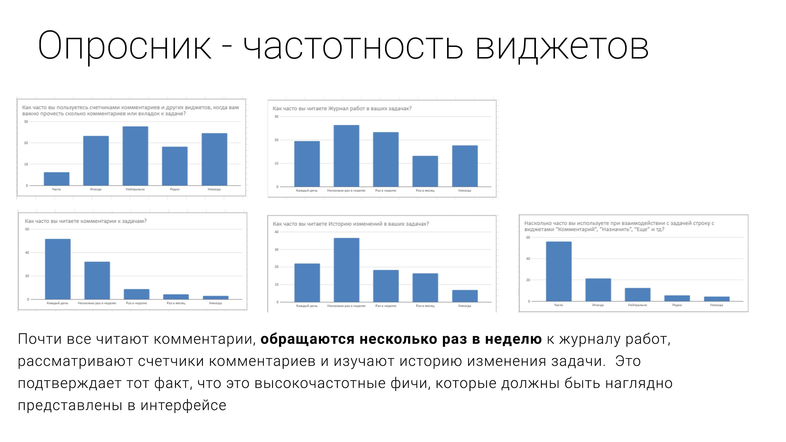
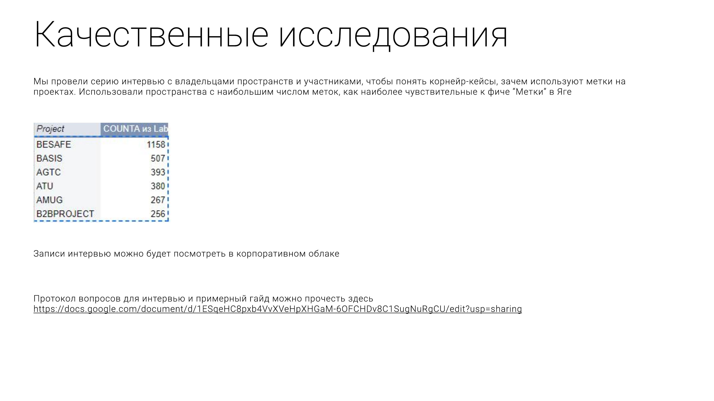
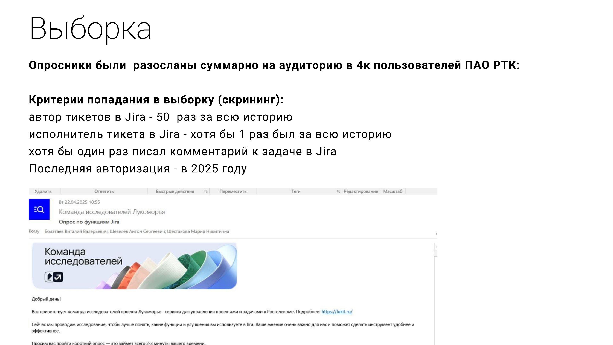
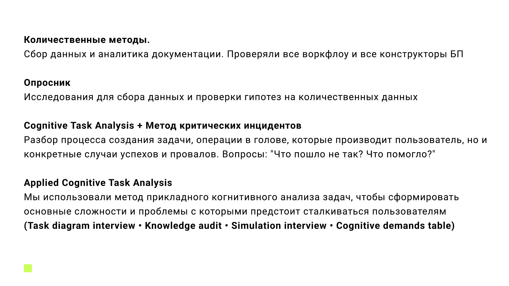

«Яга» - тасктрекер и платформа управления проектами, которую РТК строит как часть экосистемы «Лукоморье» - в логике импортозамещения зарубежного стека Atlassian (Jira, Confluence). Моя роль - продуктовые исследования на два фронта: UX конкретных фич и понимание рынка, конкурентов и закупок, на котором продукту предстоит конкурировать.

UX и продуктовые исследования фич

Карточка задачи
«Приоритет» подняли выше макета, дерево иерархии на 10 секунд быстрее списка.
Читать кейс М2
Метки
Разброс от 9 до 1158 меток на проект стал аргументом для лимита по умолчанию.
Читать кейс М3
Канбан-доска
Путаница в позиционировании (Trello vs Jira vs CRM) - и что с ней сделали.
Читать кейс М4
Фильтры
4 из 5 руководителей провалили задачу на фильтры - дважды.
Читать кейс М5
Уведомления
93% читают в почте, «колокольчик» в самой Яге почти не используют.
Читать кейс М6
GAP-анализ фич
Два поведенческих кластера хотят от продукта совершенно разного.
Читать кейс М7
Конструктор бизнес-процессов
16 юзабилити-проблем и 9 улучшений - методом, которым изучают пилотов.
Читать кейсРынок и конкуренты
Баттл-карта конкурентов
300 атрибутов сравнения - и три вещи, которые есть только у Яги.
Читать кейс М9
Рынок MES и АСУ ТП
Где промышленная автоматизация всё ещё держится на решениях родом из СССР.
Читать кейс М10
Продажи конкурентов
33-34 млрд ₽ - впервые посчитанный размер рынка ITSM для бизнес-кейса.
Читать кейс М11
Рынок TMS в РФ
37% госзакупок отсеивают Jira-подобные решения ещё до рассмотрения.
Читать кейс